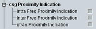

CSG Proximity Indication UE Capabilities
This section indicates the support of proximity indications by the UE.

Proximity indication capabilities
Support of proximity indications for intra-frequency E-UTRAN CSG member cells.
Remote command:Support of proximity indications for inter-frequency E-UTRAN CSG member cells.
Remote command:Support of proximity indications for UTRAN CSG member cells.
Remote command: